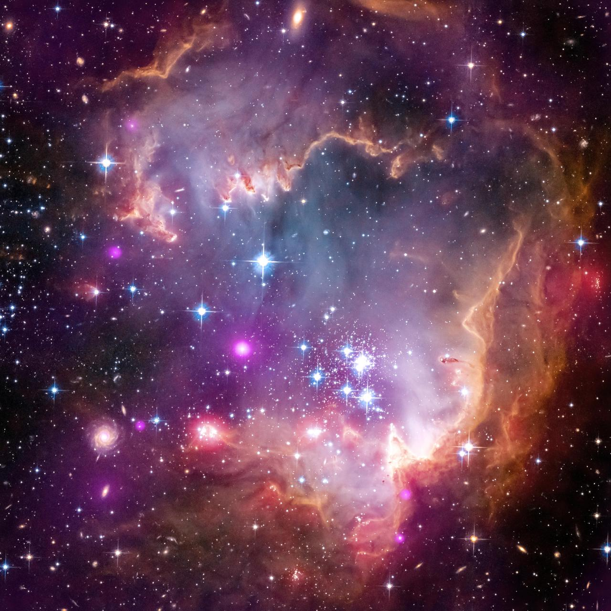

Tucana
Tucana represents the toucan, a southern constellation near the Small Magellanic Cloud
Tucana
Notable Stars:
Famous Deepsky objects:


Tucana — Foundational Data


Tucana represents the toucan, a southern constellation near the Small Magellanic Cloud
Notable Stars:
Famous Deepsky objects:
